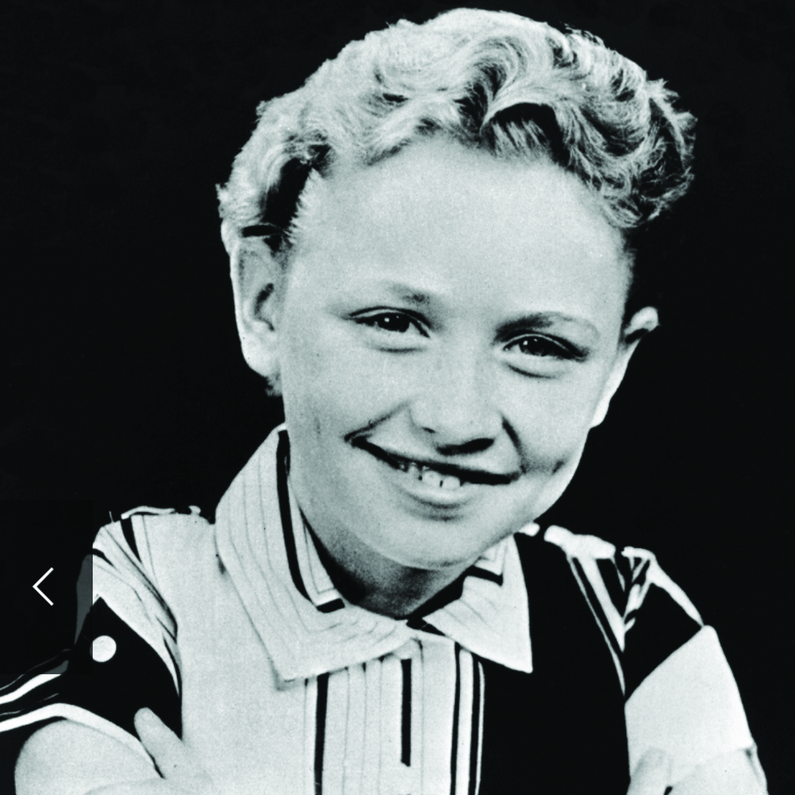
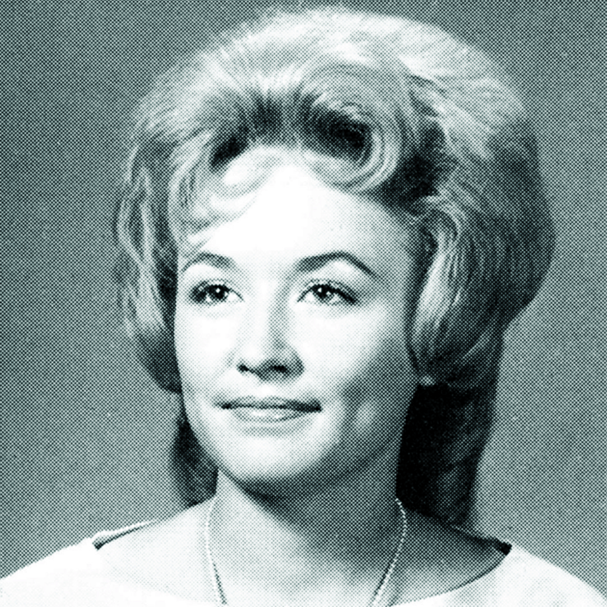
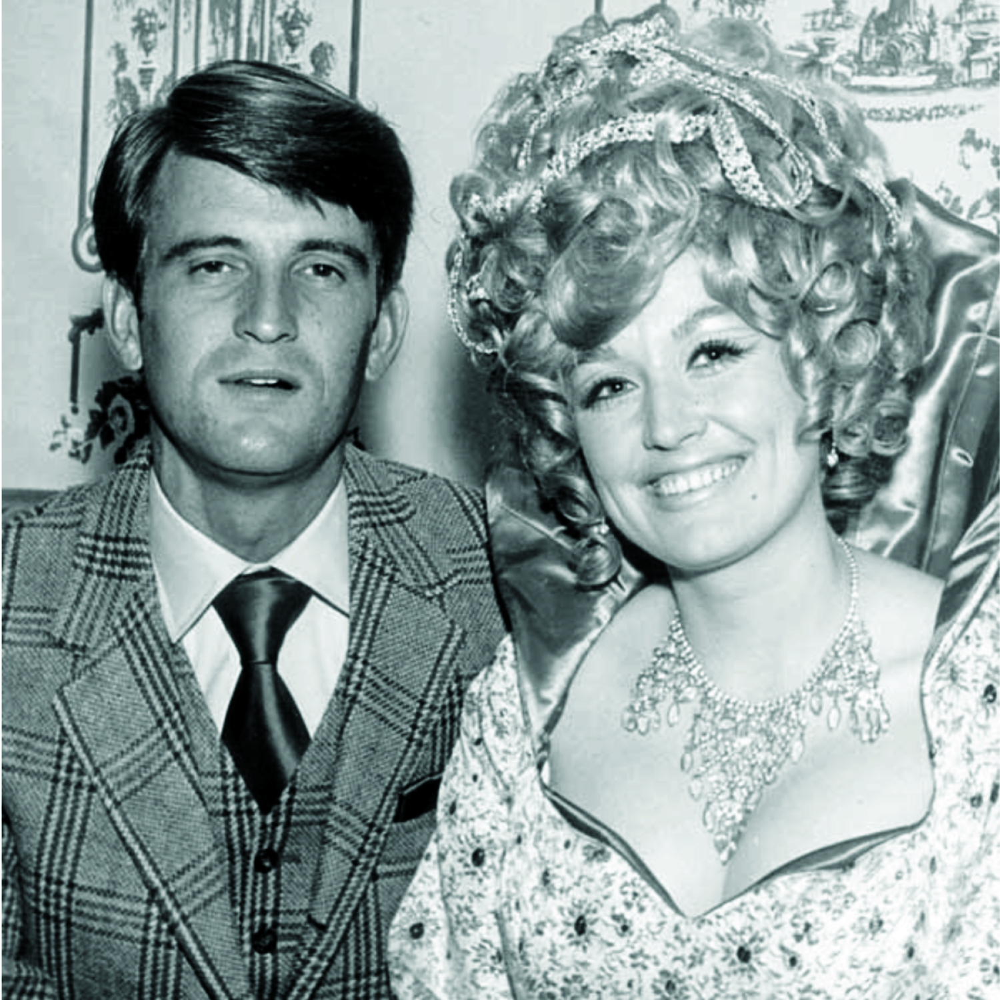
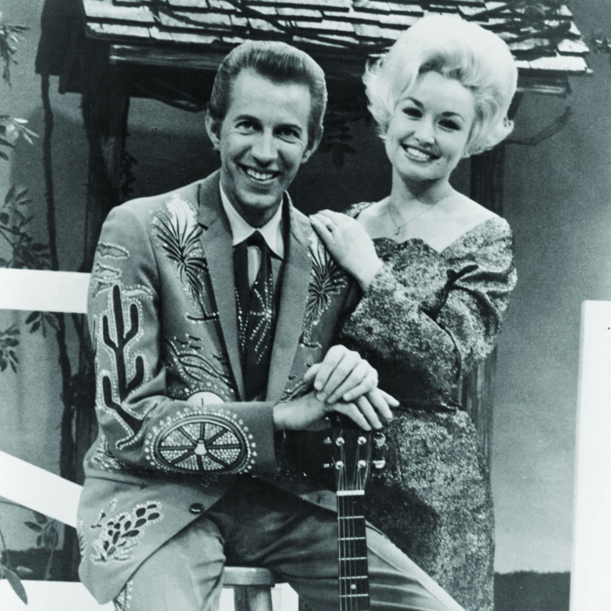
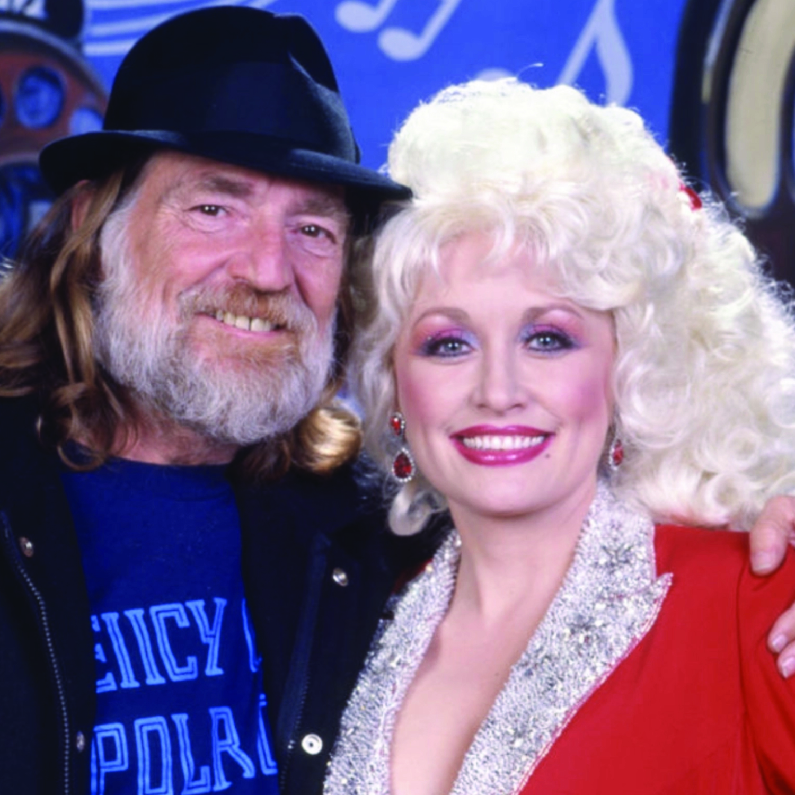
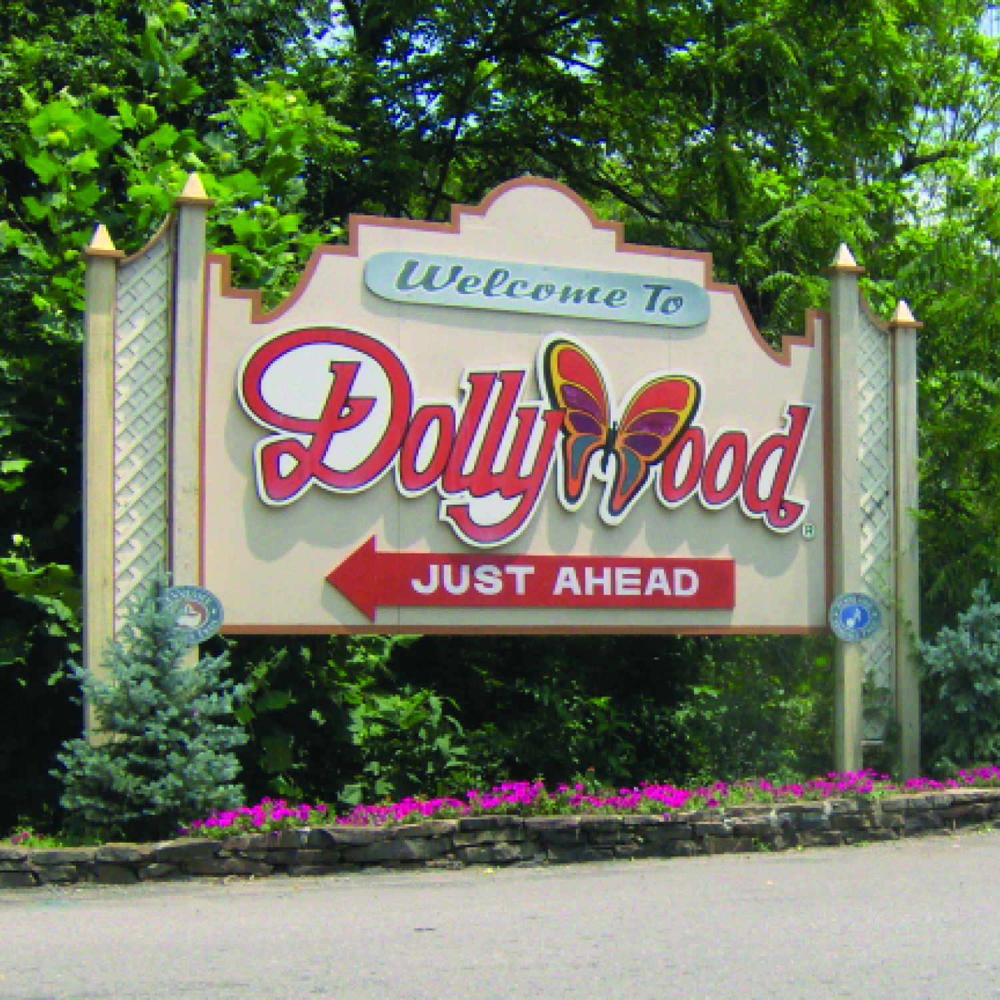
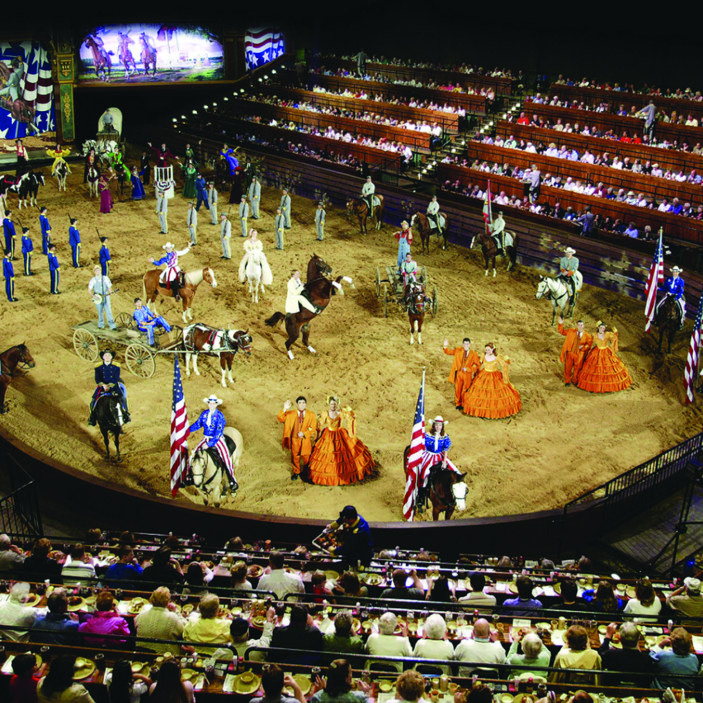
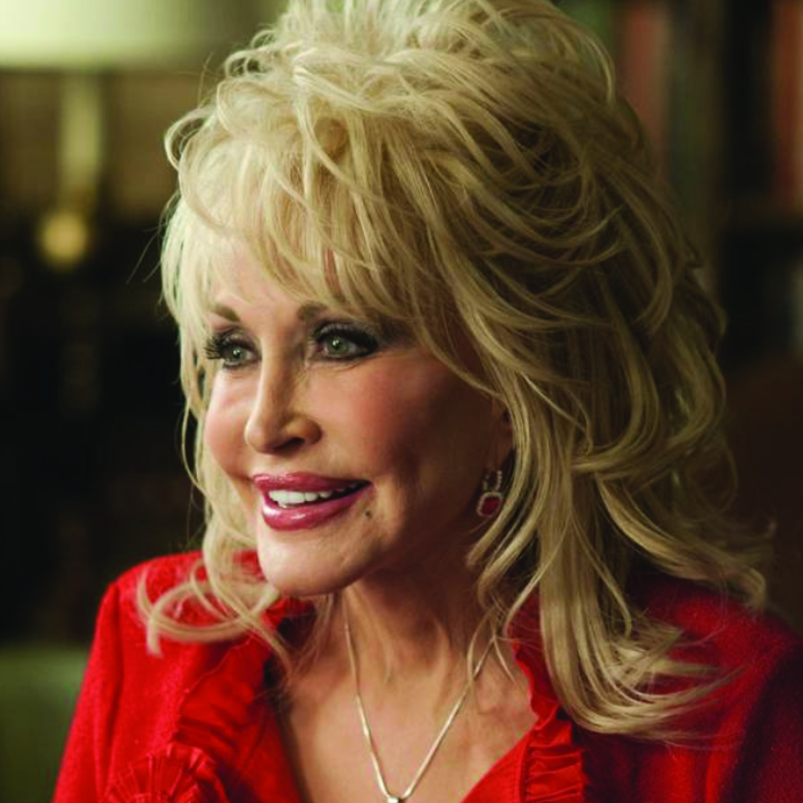
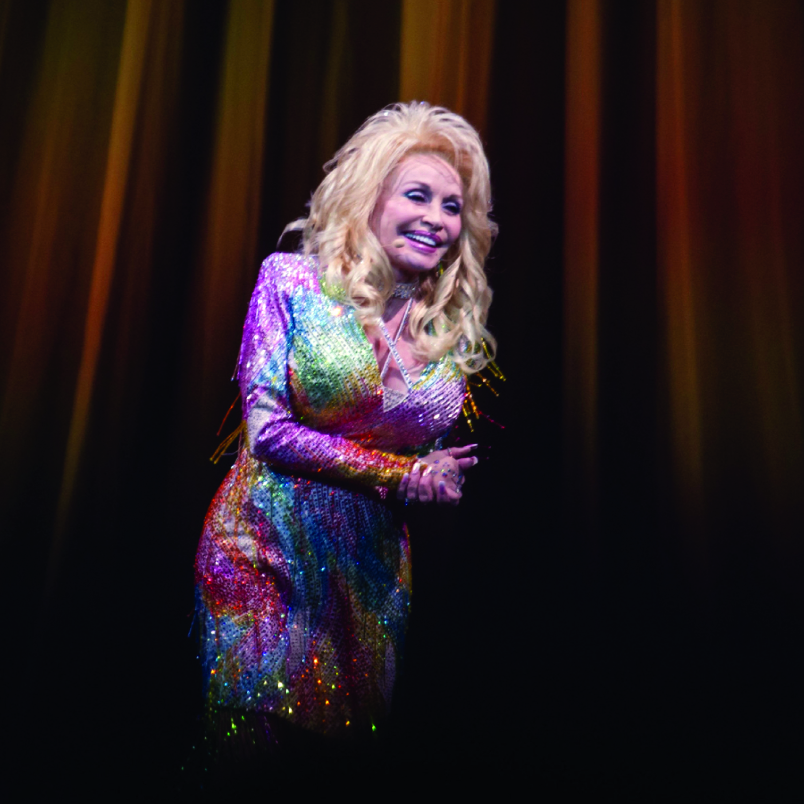

Born in 1946, Dolly Rebecca Parton grew up in rural Tennessee, the fourth of twelve siblings, before going on to become a music legend. Below are stories from her life.

Dolly Parton was 9 years old in this photo, captured in 1955. Parton has described her family as being "dirt poor". Dolly started singing and performing at a young age, and by age 10, was appearing on local radio and television.

Dolly is shown here in in her highschool junior yearbook photo in 1963 at Sevier County High School in Sevierville, Tennessee.

"Dolly is pictured with her husband, Carl Dean. The two met in 1964 outside a laundromat on the first day Dolly Parton arrived to Nashville. Dolly's music career was taking off, and despite pressure from her record company to hold off on marrying, Dolly and Carl eloped in '66. She has said "I was so in love with Carl I couldn’t see straight," and was determined to tie the knot. Despite Carl rarely being seen with Dolly in public, he is featured on the cover of her song, "Blue Ridge Mountain Boy". The two celebrated their golden (50th) anniversary in 2016. In 2011, Parton said, "We're really very proud of our marriage. It's the first for both of us. And the last."

In this photo taken in 1969, Dolly and Porter Wagoner stand on the set of The Porter Wagoner Show. Dolly accepted Porter Wagoner's invitation to join the Porter Wagoner show two years prior in 1967. The two shared a close but tumultuous relationship. They recorded several albums together, and had a good deal of commercial success before Dolly ultimately decided to part with Porter and his show in 1974 after struggling to negotiate with Porter over her ability to make some music independently. Dolly has said that her 1974 song "I Will Always Love You" is about Porter Wagoner.

Dolly found her place in country music and made many friendships along the way including with singer Willie Nelson, as pictured. "I never felt I belonged. Never belonged in my whole life, even as a little kid. I was just different and so I never really found my place till I moved to Nashville and got in the music business. That was my real place, so I fit in."

Pictured is the sign at the entrance of the Dollywood themepark in Pigeon Forge, Tennessee. Dolly opened Dollywood in 1986 in her native East Tennessee because she "always thought that if I made it big or got successful at what I had started out to do, that I wanted to come back to my part of the country and do something great, something that would bring a lot of jobs into this area."

This photo captures Dolly Parton's Stampede. She opened the dinner theater attraction in Pigeon Forge, Tennessee in 1987 under the original name of "Dolly Parton's Dixie Stampede". The premise is loosely based on the civil war wherein one sequined group on horseback is portrayed is the Union and the other as the Confederacy. It depicts the Civil War as a romanticized way, as a friendly rivalry. In 2017, Dolly decided to drop the "Dixie" amid growing controversy about the name in the wake of the white supremacist rally in Charlottesville, Va and similar events.

In 2020, Dolly Parton expressed support for the Black Lives Matter movement saying that while she hadn't been to protests that year, she supports the movement. "I understand people having to make themselves known and felt and seen," she told the magazine. "And of course Black lives matter. Do we think our little white asses are the only ones that matter? No!"

Dolly Parton contributed 1 million dollars to Covid-19 research in the wake of the recent pandemic. She was thrilled to find out around the same time the rest of the country did that her donation had went to partially fund the Moderna vaccine. On Tuesday, March 2nd, Dolly received "a dose of her own medicine", the first of two doses of the life-saving vaccine.